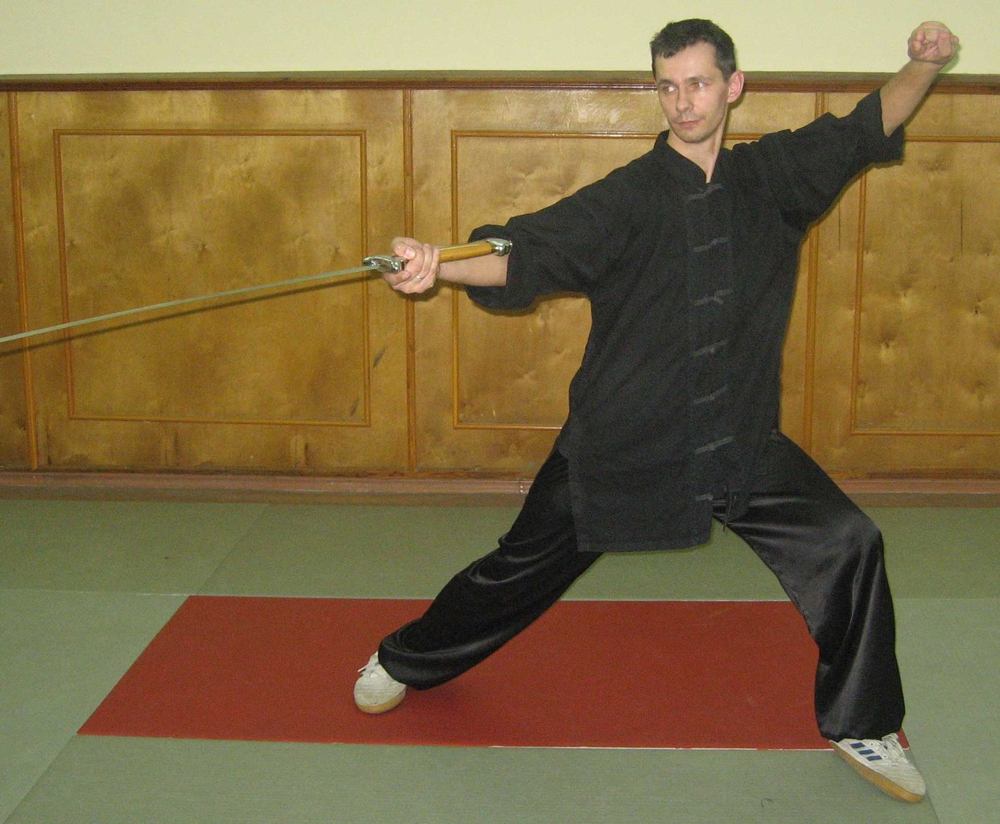

На этой страничке я немного расскажу о себе
Меня зовут Решетников Денис Викторович, родился 16 сентября 1974 года.
Образование
Мои сайты
Изучал различные курсы по HTML , CCS и версткой (Русанов, Попов, курсы "Специалиста" и "Интуит" и др.), курсы по PHP (Ляпин, Никитин),книги Мержевич "Верстка веб страниц", разные книги по PHP и Java, статьи на различных сайтах типа Habrahabr.
В веб-разработке меня привлекает то, что это одна из самых перспективных и интересных областей деятельности в настоящее время. Именно в сфере веб-разработки возможно сочетание творчества и технических знаний в области программирования. Кроме того, влияние интернета на жизнь современного человека стремительно продолжает усиливаться, следовательно необходимость в специалистах в области веб-разработки также будет с каждым годом расти.